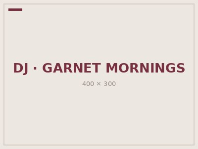
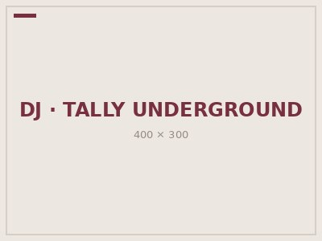
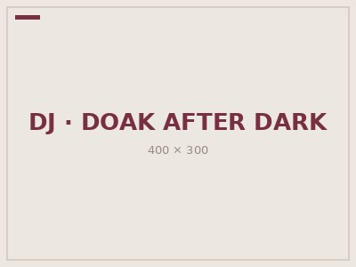
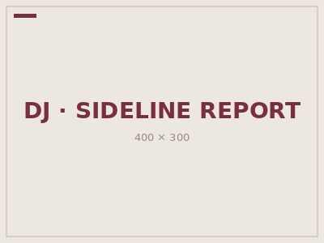

Weekly Schedule
On-Air Schedule
| Time | Monday | Tuesday | Wednesday | Thursday | Friday | Saturday | Sunday |
|---|---|---|---|---|---|---|---|
| 6 a.m. - 10 a.m. | Garnet Mornings | Garnet Mornings | Garnet Mornings | Garnet Mornings | Garnet Mornings | Weekend Wake-Up | |
| 10 a.m. - 2 p.m. | Campus Mix | Campus Mix | Campus Mix | Campus Mix | Campus Mix | Saturday Spin | Sunday Sessions |
| 2 p.m. - 6 p.m. | Seminole Sideline | Seminole Sideline | Seminole Sideline | Seminole Sideline | Seminole Sideline | Game Day Radio | Sunday Replay |
| 6 p.m. - 10 p.m. | Indie Hour | Tally Underground | Indie Hour | Tally Underground | Friday Frequency | Saturday Soundcheck | Local Spotlight |
| 10 p.m. - 2 a.m. | Doak After Dark | Doak After Dark | Doak After Dark | Doak After Dark | Doak After Dark | Late Night Live | Doak After Dark |
Show Profiles
Garnet Mornings

Genre: Pop, R&B, and campus news
Air time: Weekdays, 6:00 a.m. - 10:00 a.m.
Start the day with new music, campus updates, weather, and conversations about what is happening around FSU.
Tally Underground

Genre: Alternative and independent
Air time: Tuesday and Thursday, 6:00 p.m. - 10:00 p.m.
A mix of independent releases, underground favorites, and music from artists in Tallahassee and beyond.
Doak After Dark

Genre: Hip-hop, electronic, and late-night requests
Air time: Weeknights, 10:00 p.m. - 2:00 a.m.
A late-night mix built around listener requests, new releases, and high-energy tracks.
Seminole Sideline

Genre: Sports talk
Air time: Weekdays, 2:00 p.m. - 6:00 p.m.
Student hosts discuss FSU athletics, upcoming games, scores, and major stories from college sports.
Station Glossary
- PSA
- Public service announcement: a short message that shares useful information with listeners.
- Drive time
- A high-listening period when many people are commuting, usually in the morning or late afternoon.
- Underwriting
- Financial support provided to a noncommercial station in exchange for a brief sponsor acknowledgment.
- Legal ID
- The required station identification that gives the station call sign and community of license.